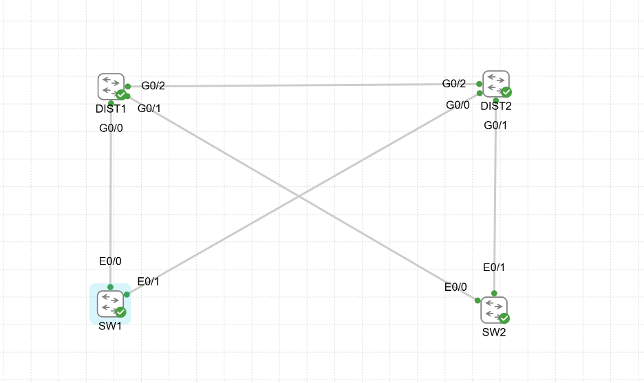
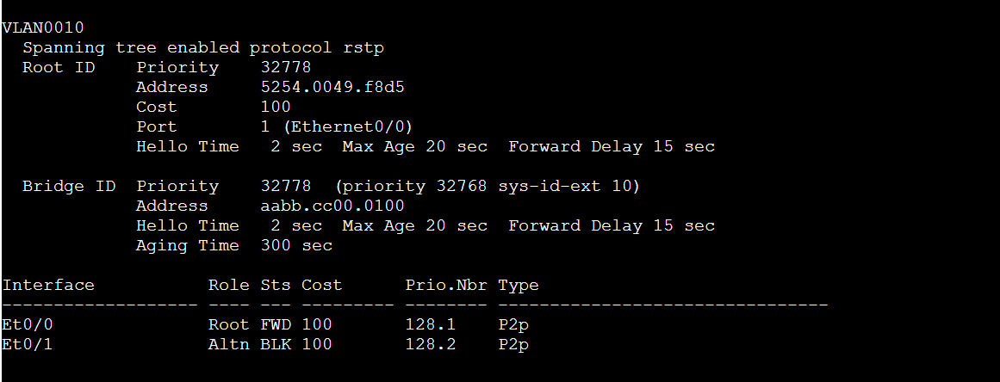
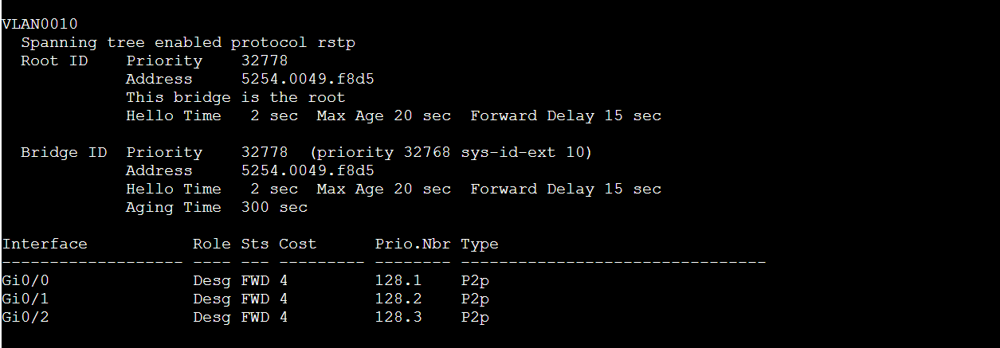

Objective
Observe how Rapid PVST+ removes loops while preserving redundancy.
This CML campus-design lab stretches VLAN 10 across a redundant four-switch topology, configures Rapid PVST+, validates root-bridge election, and inspects forwarding versus alternate port roles.


Observed forwarding tree
| DIST1 | Root bridge for VLAN 10; all participating ports designated and forwarding. |
|---|---|
| DIST2 | Root port on the direct inter-distribution link toward DIST1. |
| SW1 | Primary uplink forwarding; redundant uplink alternate and blocking. |
| SW2 | Primary uplink forwarding; redundant uplink alternate and blocking. |


Operational interpretation
- Physical redundancy does not guarantee simultaneous forwarding capacity in a Layer 2 design.
- STP intentionally blocks selected links to create a loop-free tree.
- Rapid PVST+ preserves alternate paths for failure recovery while preventing broadcast loops.
- The result motivates comparison against routed-access and logical-switch campus designs.